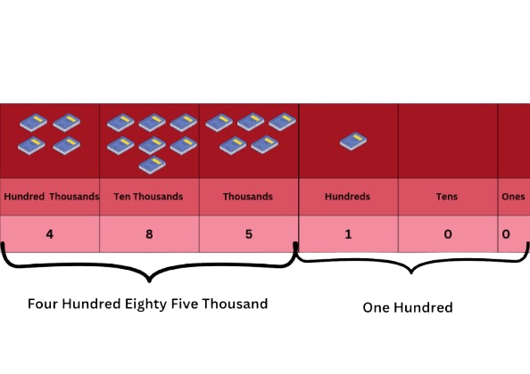

Welcome, Year 5 Students!
This platform is tailored for **Year 5 students** in SJKT DLP (Dual Language Programme) schools in Malaysia, following the KSSR Semakan syllabus. It provides easy access to study notes and interactive quizzes for **Mathematics, Science, Malay Language (SJK), Tamil Language, History, and English Language**.
Explore the subjects, revise your topics, and challenge yourself with our quizzes!
Watch our introductory video!
Study Notes: KSSR Semakan Year 5
Click on a topic to expand and read the notes.
Mathematics - DLP Year 5
- Topic 1: Whole Numbers and Operations
Recognize and Write Numbers
Learn about place value and large numbers!
Number Value (1. 1.1)1. A local bookstore received a shipment of new books across four popular genres.

How Many Science Fiction Books Did the Book Store Receive? The answer is 550 980
You Can Read The Number 550 980 as Five Hundred Fifty Thousand Nine Hundred Eighty.
(Say the number in the ‘thousands’group first.Then say the next three numbers.)
2.How many shipment of Non-Fiction books did the bookstore receive? We can break down the number 485 100 like this:

Read the number 485 100 as: Four hundred eighty-five thousand one hundred.
3.How many shipment of Fiction & Mystery books did the bookstore receive? Say the numbers 620 540 and 715 320 out loud.
4.Now let us write the numbers in words. Look for the numbers in the thousands group first.
Write the number 738,152 in words.
Place Value: Every digit in a Number has specific place value. For example, in 3,478,125, the '7' is in the Hundred Thousands place.
Digit Value: Every digit in a number has a specific place value. For example, in 3,478,125, the '7' is in the Hundred Thousands place.
Rounding Off: Simplifying numbers to a certain place value. e.g., 4,567,890 rounded to the nearest ten thousand is 4,570,000.
Addition & Subtraction: Advanced problems involving large numbers and multiple steps.
Multiplication & Division: Operations with multi-digit numbers, including long division.
Problem Solving: Applying these operations to solve complex daily life problems and multi-step word problems.
(Please replace this with actual Year 5 Mathematics syllabus content.)
- Topic 2: Fractions, Decimals, and Percentages
Fractions, Decimals, and Percentages (Year 5 Content Placeholder)
Fractions: Understanding proper, improper fractions, and mixed numbers. Operations (addition, subtraction, multiplication, division) involving various types of fractions.
Decimals: Place value up to thousandths. Operations (addition, subtraction, multiplication, division) involving decimals, including solving word problems.
Percentages: Means "out of one hundred" (%). Converting between fractions, decimals, and percentages. Calculating percentage of a quantity and solving related problems.
(Please replace this with actual Year 5 Mathematics syllabus content.)
Science - DLP Year 5
- Topic 1: Microorganisms
Microorganisms: The Unseen World (Year 5 Content Placeholder)

Figure 1: Example of Bacteria
Microorganisms are tiny living things that can only be seen with a microscope. For Year 5, focus on:
Types and Characteristics: Bacteria, fungi, protozoa, algae, and viruses – their basic structures and how they differ.
Beneficial vs. Harmful: Examples of useful microorganisms (e.g., in food, decomposition) and harmful ones (causing diseases, food spoilage).
Impact on Life: How microorganisms affect human health, agriculture, and the environment.
Prevention of Diseases: Methods to prevent the spread of diseases caused by microorganisms (e.g., hygiene, vaccination, food preservation).
(Please replace this with actual Year 5 Science syllabus content.)
- Topic 2: Electricity
Electricity: Powering Our World (Year 5 Content Placeholder)
Electricity is a form of energy that flows through a circuit. For Year 5, delve into:
Electrical Circuits: Detailed study of components (dry cell, bulb, switch, wires) and symbols. Drawing circuit diagrams.
Series and Parallel Circuits: Differences in how components are connected, how current flows, and effects on brightness of bulbs when one breaks. Practical applications.
Conductors and Insulators: Identifying materials that conduct electricity well and those that don't.
Safety Precautions: Importance of electrical safety in daily life, identifying dangers, and safe practices.
(Please replace this with actual Year 5 Science syllabus content.)
Malay Language
- Topic 1: Basic Grammar and Sentence Structure (Asas Tatabahasa & Struktur Ayat)
Asas Tatabahasa & Struktur Ayat (Basic Grammar & Sentence Structure) (Year 5 SJKC Content Placeholder)
Fokus kepada kata nama (nouns), kata kerja (verbs), dan kata adjektif (adjectives) asas. Pembinaan ayat tunggal (simple sentences) dan ayat majmuk (compound sentences) mudah.
Penggunaan imbuhan (affixes) dasar seperti 'me-', 'ber-', 'di-'.
(Sila gantikan ini dengan kandungan silibus Bahasa Melayu Tahun 5 SJKC yang sebenar.)
- Topic 2: Reading Comprehension & Vocabulary (Pemahaman & Kosa Kata)
Pemahaman & Kosa Kata (Reading Comprehension & Vocabulary) (Year 5 SJKC Content Placeholder)
Memahami petikan pendek dan soalan berkaitan. Mengenal pasti maksud perkataan dalam konteks ayat.
Membina ayat menggunakan kosa kata baharu yang dipelajari dari pelbagai tema (contoh: alam sekitar, keluarga, perayaan).
(Sila gantikan ini dengan kandungan silibus Bahasa Melayu Tahun 5 SJKC yang sebenar.)
Tamil Language - DLP Year 5 (தமிழ் மொழி)
- Topic 1: Advanced Tamil Alphabets & Grammar (மேம்பட்ட தமிழ் எழுத்துகள் மற்றும் இலக்கணம்)
மேம்பட்ட தமிழ் எழுத்துகள் மற்றும் இலக்கணம் (Advanced Tamil Alphabets & Grammar) (Year 5 Content Placeholder)
ஐந்தாம் ஆண்டுக்குரிய உயிர்மெய் எழுத்துகள் மற்றும் கூட்டு எழுத்துகள் பற்றிய தெளிவான பயிற்சி. பெயர்கள், வினைச்சொற்கள், அடைமொழிகள் போன்ற இலக்கண அடிப்படைகள்.
வாக்கிய அமைப்புகள், ஒருமை-பன்மை, பால் (gender) வேறுபாடுகள்.
(தயவுசெய்து ஐந்தாம் ஆண்டு தமிழ்மொழி பாடத்திட்டத்திற்கு ஏற்ற உள்ளடக்கத்தை இங்கே சேர்க்கவும்.)
- Topic 2: Reading Comprehension & Writing (வாசிப்புப் புரிதல் மற்றும் எழுத்து)
வாசிப்புப் புரிதல் மற்றும் எழுத்து (Reading Comprehension and Writing) (Year 5 Content Placeholder)
கதைகள், கவிதைகள் மற்றும் கட்டுரைகளை வாசித்து புரிந்துகொள்ளுதல். முக்கிய தகவல்களை அடையாளம் காணுதல்.
சாதாரண வாக்கியங்களில் இருந்து சிக்கலான வாக்கியங்களை உருவாக்குதல். சுருக்கமான பத்திகள் மற்றும் கட்டுரைகளை எழுதுதல்.
(தயவுசெய்து ஐந்தாம் ஆண்டு தமிழ்மொழி பாடத்திட்டத்திற்கு ஏற்ற உள்ளடக்கத்தை இங்கே சேர்க்கவும்.)
History - DLP Year 5 (வரலாறு)
- Topic 1: Early Civilizations in Malaysia (மலேசியாவின் ஆரம்பகால நாகரிகங்கள்)
மலேசியாவின் ஆரம்பகால நாகரிகங்கள் (Early Civilizations in Malaysia) (Year 5 Content Placeholder)
மலேசியாவில் தோன்றிய ஆரம்பகால நாகரிகங்கள் பற்றிய ஆழமான புரிதல். சுங்கை மாஸ், ஜெந்தெராம் போன்ற தொல்லியல் தளங்கள்.
இந்த நாகரிகங்களின் சமூக அமைப்பு, பொருளாதாரம் மற்றும் கலாச்சார நடைமுறைகள்.
(தயவுசெய்து ஐந்தாம் ஆண்டு வரலாறு பாடத்திட்டத்திற்கு ஏற்ற உள்ளடக்கத்தை இங்கே சேர்க்கவும்.)
- Topic 2: The Golden Age of Malacca (மலாக்காவின் பொற்காலம்)
மலாக்காவின் பொற்காலம் (The Golden Age of Malacca) (Year 5 Content Placeholder)
மலாக்கா சுல்தானகத்தின் எழுச்சி, வளர்ச்சி மற்றும் வீழ்ச்சி பற்றிய விரிவான ஆய்வு. பரமேஸ்வரா முதல் கடைசி சுல்தான் வரையிலான முக்கிய நிகழ்வுகள்.
மலாக்கா ஒரு முக்கிய வர்த்தக மையமாக எவ்வாறு உருவானது, அதன் சட்டங்கள் (உண்டாங்-உண்டாங் மலாக்கா), மற்றும் நிர்வாக முறைகள்.
(தயவுசெய்து ஐந்தாம் ஆண்டு வரலாறு பாடத்திட்டத்திற்கு ஏற்ற உள்ளடக்கத்தை இங்கே சேர்க்கவும்.)
English Language - DLP Year 5
- Topic 1: Grammar - Compound & Complex Sentences
Grammar: Compound and Complex Sentences (Year 5 Content Placeholder)
Understanding and forming **compound sentences** using conjunctions like 'and', 'but', 'or'.
Learning to form **complex sentences** using subordinating conjunctions (e.g., 'because', 'although', 'while').
Identifying subjects, verbs, and objects in more elaborate sentences.
(Please replace this with actual Year 5 English Language syllabus content.)
- Topic 2: Writing Skills - Paragraph Development & Story Writing
Writing Skills: Paragraph Development & Story Writing (Year 5 Content Placeholder)
Developing well-structured paragraphs with a clear topic sentence, supporting details, and a concluding sentence.
Planning and writing simple narratives (stories) with a clear beginning, middle, and end, including characters, setting, and plot.
Using appropriate vocabulary and descriptive language to make writing interesting.
(Please replace this with actual Year 5 English Language syllabus content.)
Test Your Knowledge! (Year 5 Quiz)
Select a subject below to start its quiz. You can attempt quizzes for individual subjects.
Time Elapsed:
Support Our Mission
St.John Bosco Study Hub is committed to providing free, high-quality educational resources for Year 5 SJKT DLP students. Our goal is to ensure every student has access to the tools they need to succeed in Mathematics, Science, and Languages.
Maintaining this platform, creating new content, and ensuring it remains accessible to all requires continuous effort and resources. Your generous donations help us cover operational costs, improve our features, and expand our offerings.
Every contribution, no matter how small, makes a significant difference in empowering the next generation of learners.
Direct Bank Transfer
You can make a direct bank transfer to our account. Please include your name if you wish to be acknowledged.
Bank Name: Maybank
Account Name: St.John Bosco Study Hub
Account Number: 5571 7041 5732
Swift Code: MBBEMYKL (for international transfers)
Touch 'n go QR
Scan the Touch 'n Go QR code below

For large donations, corporate partnerships, or any inquiries, please contact us at: stjohnboscostudyhub.gmail.com
Thank you for being a part of our journey to educate and inspire!